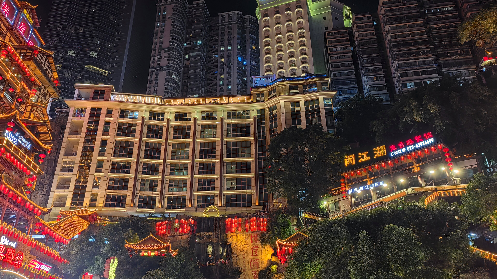
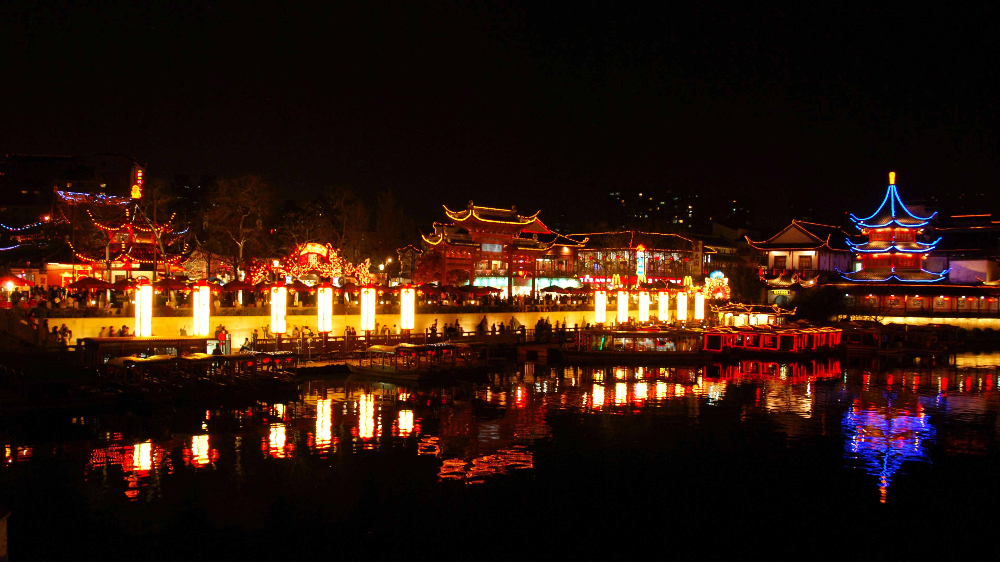
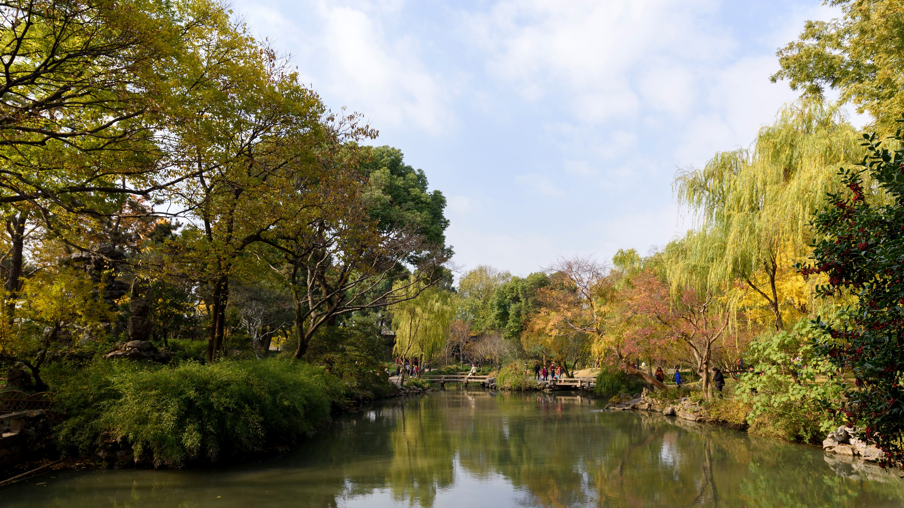
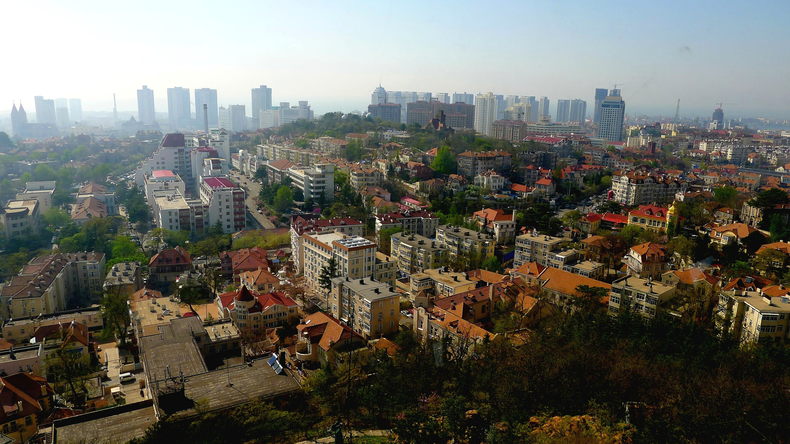
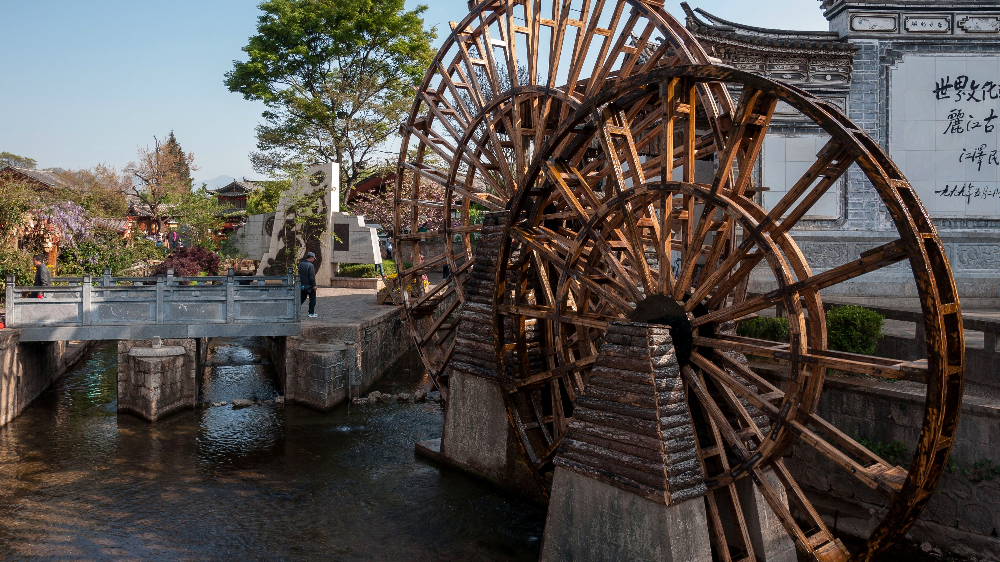
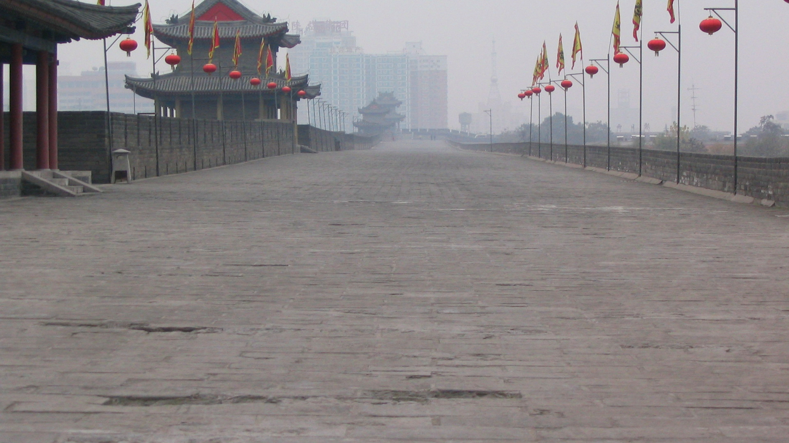
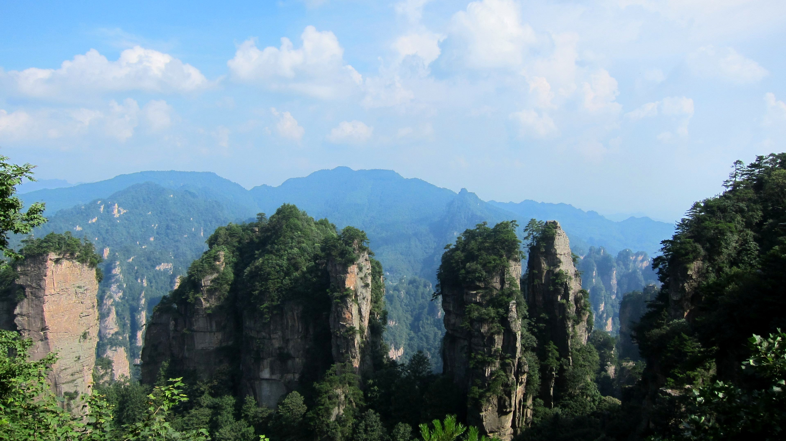
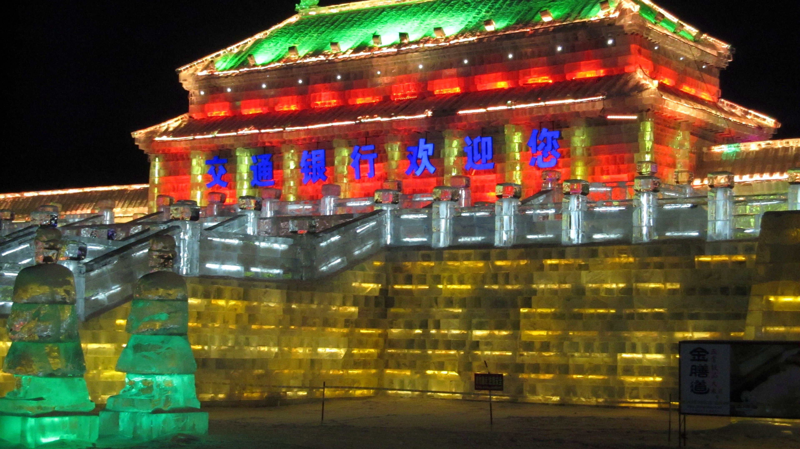
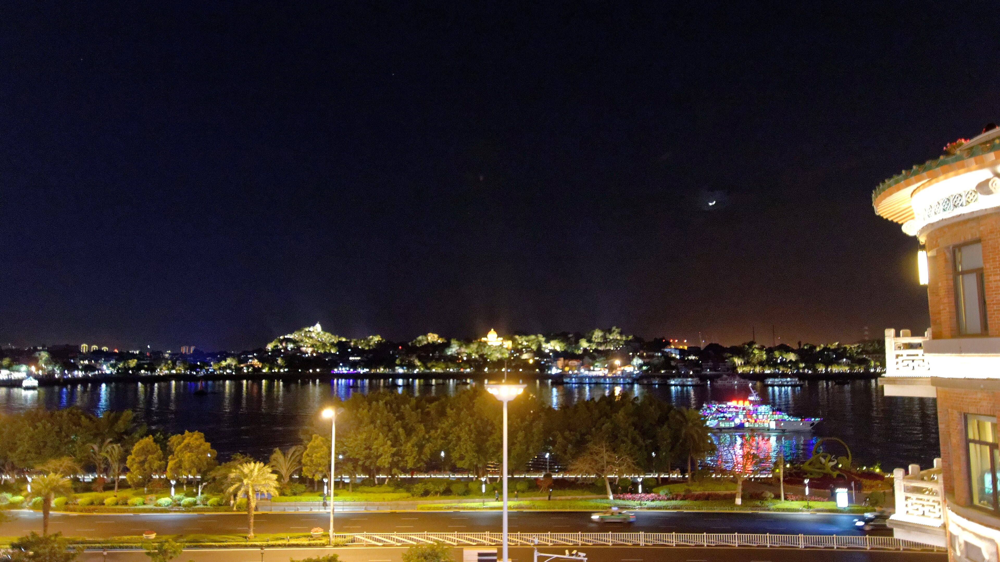

山城烟火 重庆 洪崖洞、长江索道、山城步道和火锅，适合夜景与美食路线。
金陵文化 南京 中山陵、秦淮河、明城墙，适合历史慢游。
园林水巷 苏州 拙政园、平江路、山塘街，适合精致江南周末。
海岸建筑 青岛 栈桥、八大关、奥帆中心，适合海风漫步。
古城雪山 丽江 古城、束河、玉龙雪山，适合慢游与拍照。
古都夜色 西安 兵马俑、古城墙、大唐不夜城，适合历史文化路线。
峰林奇观 张家界 森林公园、天门山、玻璃桥，适合自然奇观和徒步观景。
冰雪冬游 哈尔滨 冰雪大世界、中央大街和俄式建筑，冬季主题鲜明。
海滨文艺 厦门 鼓浪屿、环岛路和沙坡尾，适合轻松短途游。